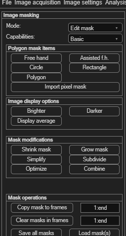
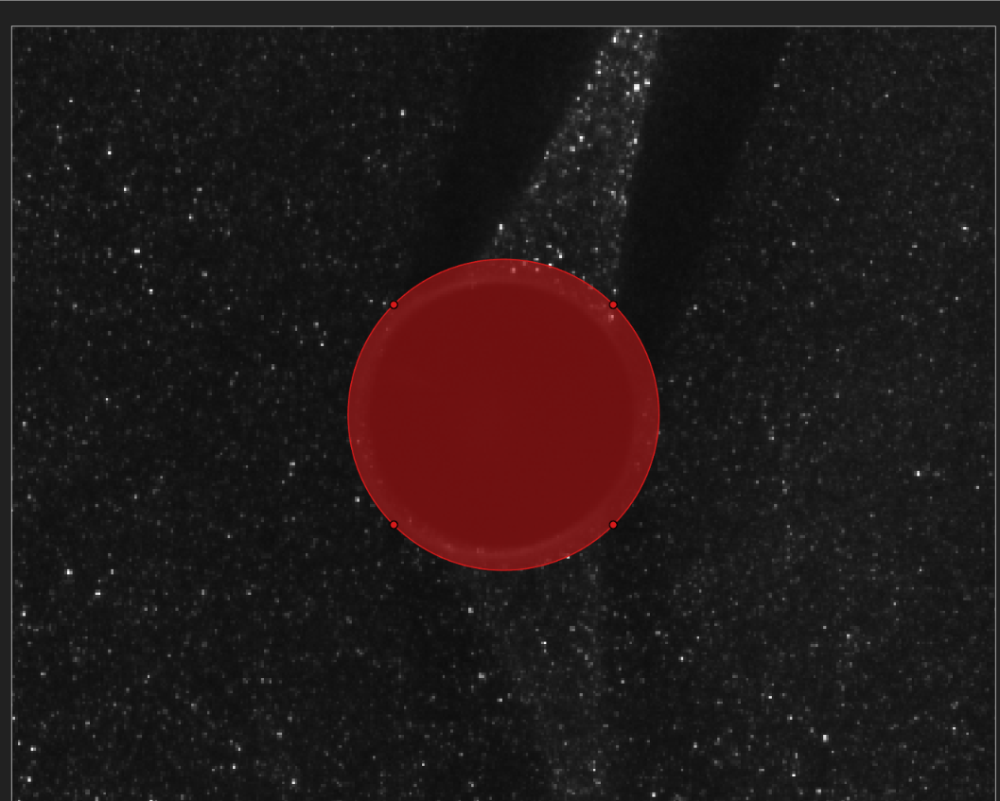
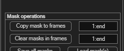
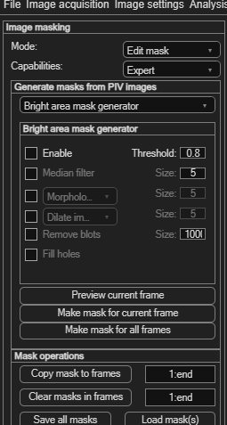

Masking
Masking tells PIVlab which parts of your images to ignore — solid walls, models, reflections or any region without valid tracer particles. Masked pixels produce no vectors and are excluded from all results and statistics.
A mask is a shape (or several shapes) drawn on top of the image. Inside a mask, the
velocity is set to “not a number” (NaN), so it never contributes to
the correlation, the plots or the averaged data. Masks are stored per frame, but can be
copied to as many frames as you like — useful when an object stays still throughout a
time-resolved recording.
Opening the masking panel
From the menu bar choose Image settings → Define masks (exclude regions from analysis). The left-hand panel switches to Image masking, shown here.
Load your images first (File → New session) so the image is visible while you draw. If a region is hard to see, use the Image display options buttons — Brighter, Darker and Display average (the mean of all frames) — to make objects and reflections stand out.

Mode and Capabilities
Two dropdowns at the top of the panel control how masking behaves:
| Dropdown | Options | What it does |
|---|---|---|
| Mode | Edit mask / Preview mask | Edit mask shows every mask as an editable shape you can drag and resize. Preview mask shows the masks only as a coloured overlay, so you can check the result without accidentally moving a shape. |
| Capabilities | Basic / Expert | Basic gives you the manual drawing tools. Expert adds the automatic mask generators (see Automatic masks). |
Drawing a mask
With Mode: Edit mask and Capabilities: Basic, the Polygon mask items panel offers five drawing tools:
| Tool | Use it for |
|---|---|
| Free hand | Tracing an irregular outline by dragging the mouse. |
| Assisted f.h. | Freehand drawing that snaps to nearby image edges. |
| Circle | Round objects such as cylinders or bubbles. |
| Rectangle | Straight-edged regions and image borders. |
| Polygon | Click corner-by-corner to enclose a straight-sided region. |
Worked example — mask the cylinder in the Kármán example. The example images contain a dark cylindrical rod that should be excluded:
- Zoom in on the object first: click the magnifier icon, drag a rectangle around it, then click the magnifier again to leave zoom mode. This makes accurate drawing easier.
- Click Circle in the Polygon mask items panel.
- In the image, press and drag with the left mouse button to draw the circle; release to finish. In PIVlab the left mouse button performs the action and the right mouse button ends it.
- Fine-tune the shape by dragging its handles or its centre until it covers the object.

You can draw as many masks as you need in a frame — add a rectangle along an edge and a circle over an object, for example. To remove a single mask, click it and press Delete, or right-click it and choose the delete option.
Applying a mask to several frames
Masks start out on the current frame only. Because the rod does not move during the recording, the same mask should apply to every frame. Use the Mask operations panel:
- In the field next to Copy mask to frames, enter the
frames to copy to. The default
1:endmeans “all frames”. - Click Copy mask to frames. The masks from the current frame are copied to every frame you listed.
The frame field accepts MATLAB-style ranges: 1:end (all frames),
1,4,7 (individual frames), 10:15 (a continuous range), or a
combination. end always means the last frame.
To remove masks again, enter a range next to Clear masks in frames and click it — only the frames you list are cleared.

Overlapping masks — keeping only a region
When masks overlap, PIVlab combines them with an even–odd rule: a pixel is excluded from the analysis when it lies inside an odd number of masks. One mask over an area excludes it; a second mask overlapping the first cancels the overlap and brings that region back into the analysis; a third overlap excludes it again, and so on.
This turns an otherwise awkward task into two steps: to analyse only a small region and exclude everything else, use two overlapping masks —
- Draw a large mask (for example a Rectangle) covering the whole image. On its own, this would exclude everything.
- Draw a smaller mask of any shape over just the region you want to keep. Where it overlaps the large mask the two cancel, so that region stays un-masked and is the only part analysed.
Editing, removing and combining masks
The Mask modifications panel adjusts the currently selected mask (click a mask to select it):
| Button | Effect |
|---|---|
| Shrink mask | Contracts the selected mask inward. |
| Grow mask | Expands the selected mask outward — handy for adding a small safety margin around an object. |
| Simplify | Reduces the number of points, giving a smoother, lighter outline. |
| Subdivide | Adds points, allowing finer detail. |
| Optimize | Re-distributes the outline points for a cleaner shape. |
| Combine | Merges all overlapping masks in the current frame into one. |
Automatic masks (Expert mode)
Switch Capabilities to Expert to reveal the Generate masks from PIV images panel. Instead of drawing by hand, PIVlab can detect regions to mask directly from the image content. Pick a generator from the dropdown:
- Bright area mask generator — masks over-exposed regions such as glare and reflections (bright pixels above a threshold).
- Dark area mask generator — masks dark objects and shadows (pixels below a threshold).
- Low contrast area mask generator — masks regions with too few particles to correlate reliably. The Suggest threshold button proposes a sensible starting value.
Each generator has a Threshold plus optional clean-up filters (median smoothing, morphological open/close, dilate/erode, remove small blobs, fill holes). Enable only what you need — for a first attempt, the threshold alone is often enough. Then use the three buttons at the bottom:
- Preview current frame — see the detected region without committing, and adjust the threshold until it fits.
- Make mask for current frame — turn the preview into a real mask on this frame.
- Make mask for all frames — run the detection on every frame in the session.

Saving, loading and importing masks
Masks are stored with your PIVlab session, but you can also reuse them independently:
| Button | Action |
|---|---|
| Save all masks | Writes every mask in the session to a MATLAB .mat file for reuse. |
| Load mask(s) | Loads masks that were previously saved from PIVlab. |
| Import pixel mask | Imports a mask from a black-and-white image file (Basic mode). |